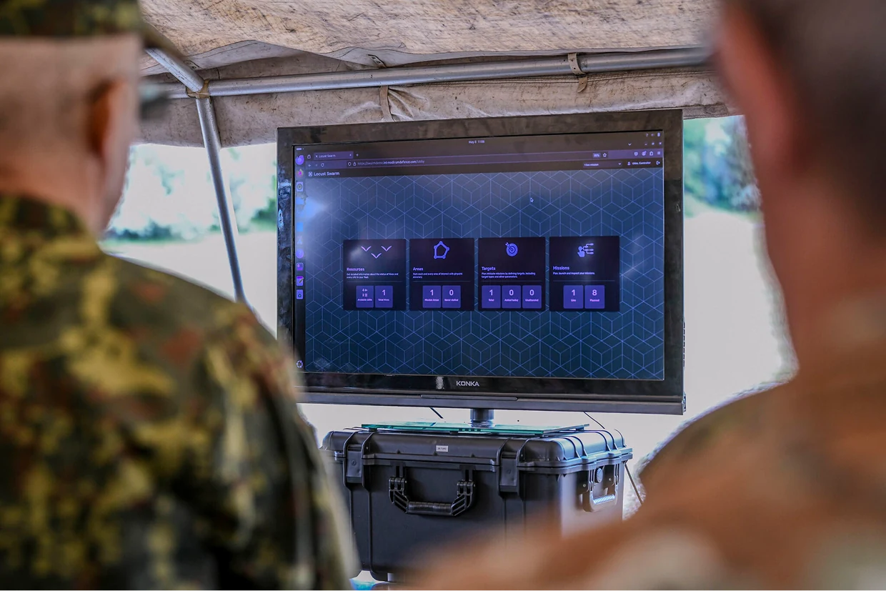
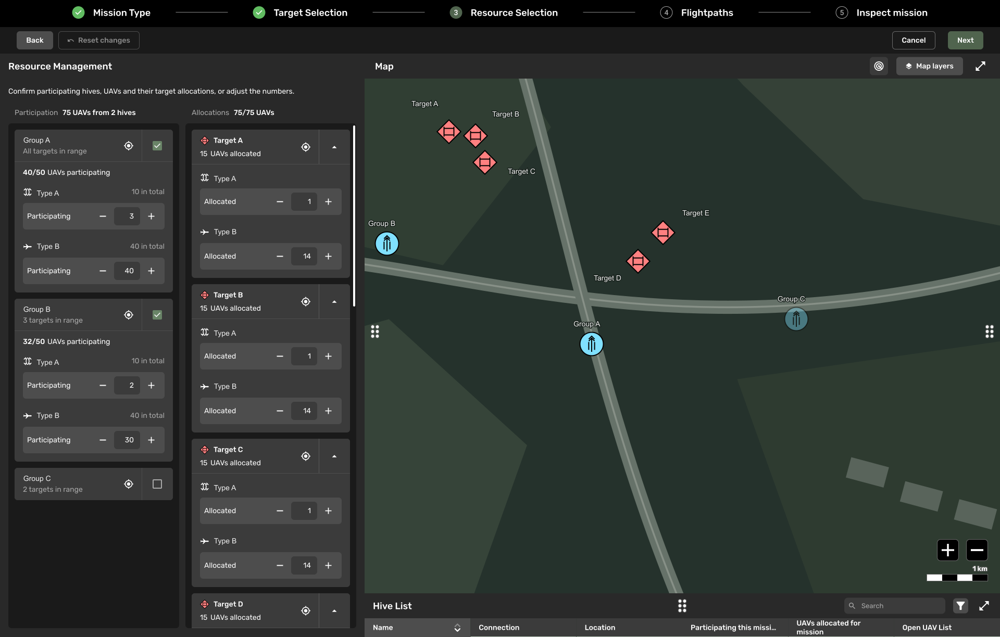
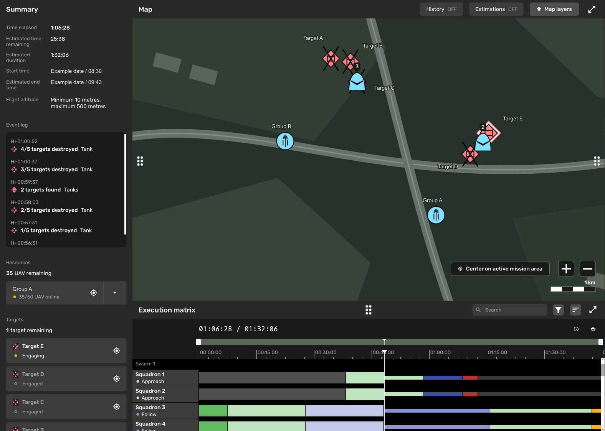

Modirum Gespi · Autonomous UAV operations
Locust Swarm
Designing a product and building its design practice.
Context
Locust Swarm is a command-and-control product for coordinating autonomous UAV missions. Modirum Gespi’s small R&D team in Tampere was exploring how a single operator could manage a fleet while retaining situational awareness and the ability to intervene.
I joined during discovery, before product development began, as the first designer. I owned product design from initial needs and mission workflows through productization, while establishing how design and engineering would work together.

Problem
More aircraft cannot mean more work for every operator.
UAV fleets can grow faster than the supply of trained pilots. The design challenge was to turn complex requirements into workflows that one operator could use under high cognitive load: planning a mission, following its progress, recognising when intervention was needed and taking action.
Alongside the interface, the team needed a design practice that could keep pace with development. Requirements, interaction decisions and reusable components had to become part of the engineering workflow.
Process
I studied the requirements and their underlying research, followed industry developments, researched competing solutions and learned from senior domain experts on the team. This informed the core mission-planning flow I defined. I delivered Figma designs and components incrementally, working through feasibility and performance constraints with developers as they implemented the product.
As the work expanded, I recruited and onboarded another designer. Together we built the design system, addressed design debt and worked to get designs ahead of development. AI was already widely used in engineering; we also explored AI-assisted design, for example using Figma Make to accelerate design exploration.
Field testing and international demonstrations brought me closer to operators and engineers using the system. I learned to operate UAVs as a safety pilot and used what I observed in the field to inform interface changes.
Solution
Keep the mission in view, with detail within reach.
We developed a map-based interface for resource management, mission planning and execution. It brought autonomous fleet operations into a single operator’s workflow, with situational awareness and human intervention central to the design.


The compact log keeps routine status information in view while providing a route to deeper technical logs. It is one example of how field experience shaped the product’s interaction design.
Impact
From discovery to live demonstrations and release preparation.
I helped take Locust Swarm from early requirements into a working product demonstrated to international defence audiences. Alongside product design, I established design practices, helped grow the team and took on broader project and product responsibilities as the work moved through productization, certification and formal release preparation.
A highlight was a live demonstration after roughly a year of work on the product. We spent a week preparing on site. I served as a safety pilot, and after the successful demonstration gathered feedback from an audience that included generals and ministers. It made the team’s progress tangible: we could show defence representatives what the technology could already do.
Industry recognition: Aerospace & Defense Review’s feature and Modirum Gespi’s award announcement.